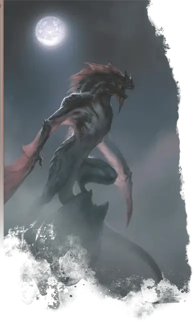

Вервиверна
Werewyvern
Средний Дракон (Ликантроп), Хаотичный Злой

Класс Защиты 16 Инициатива +5 (15)
Хиты 152 (16к8 + 80)
Скорость 30 футов, Полёта 40 футов (только в форме виверны или в гибридной форме)
| мод | спас | ||
|---|---|---|---|
| СИЛ | 19 | +4 | +4 |
| ЛОВ | 15 | +2 | +5 |
| ТЕЛ | 20 | +5 | +5 |
| мод | спас | ||
|---|---|---|---|
| ИНТ | 10 | +0 | +0 |
| МДР | 12 | +1 | +4 |
| ХАР | 12 | +1 | +1 |
Чувства Тёмное зрение 120 футов, пассивное Восприятие 14
Языки Общий, Драконий (не говорит в форме виверны)
Опасность 8 (3 900 опыта; БВ +3)
Особенности
Облёт (только в форме виверны или в гибридной форме). Вервиверна не Провоцирует атак, когда вылетает из зоны досягаемости врага.
Действия
Мультиатака. Вервиверна совершает три атаки Метательным копьём или Раздиранием в любой комбинации. Она может заменить одну из этих атак на атаку Жалом.
Метательное копьё (только в гуманоидной или гибридной форме). Бросок рукопашной или дальнобойной атаки: +7, досягаемость 5 фт. или дистанция 30/120 фт. Попадание: 18 (4к6 + 4) Колющего урона.
Раздирание. Бросок рукопашной атаки: +7, досягаемость 5 фт. Попадание: 18 (4к6 + 4) Рубящего урона.
Жало (только в форме виверны или в гибридной форме). Бросок рукопашной атаки: +7, досягаемость 5 фт. Попадание: 7 (1к6 + 4) Колющего урона плюс 16 (3к10) урона Ядом, и цель становится Отравленной до начала следующего хода вервиверны. Если цель — Гуманоид, она подвергается следующему эффекту. Спасбросок Телосложения: Сл 16. Провал: Цель проклята. Когда Хиты проклятой цели опускаются до 0, она становится Вервиверной под управлением Мастера и получает 20 Хитов. Успех: Цель становится невосприимчива к проклятию этой вервиверны на 24 часа.
Бонусные действия
Перевоплощение. Вервиверна либо перевоплощается в гибрид виверны и гуманоида Среднего размера или в виверну Большого размера, либо возвращается в истинную форму гуманоида. Её параметры, кроме размера, не меняются в зависимости от формы. Любое снаряжение, которое она носит или несёт, не трансформируется.
Бонус мастерства +3
Среда обитания Горы, Холмы
Сокровища Личные
Вервиверна
Преображённая ядом виверны
Вервиверны, одни из редчайших оборотней, преображаются из гуманоидов в поджарых виверн или в драконоподобных гуманоидных гибридов.
Большинство вервиверн наделены драконьей алчностью и свирепостью, а потому часто промышляют разбоем, наёмничеством и заказными убийствами. Вервиверны не гнушаются ни одним приёмом и при любой возможности предпочитают засады. Они стараются скрывать свою вивернову форму до тех пор, пока им не понадобится решающее преимущество в схватке или стремительный побег по воздуху.
Вервиверны передают ликантропию через смертоносный яд. Передача проклятия непредсказуема и часто застаёт врасплох не только жертву, но и саму вервиверну.